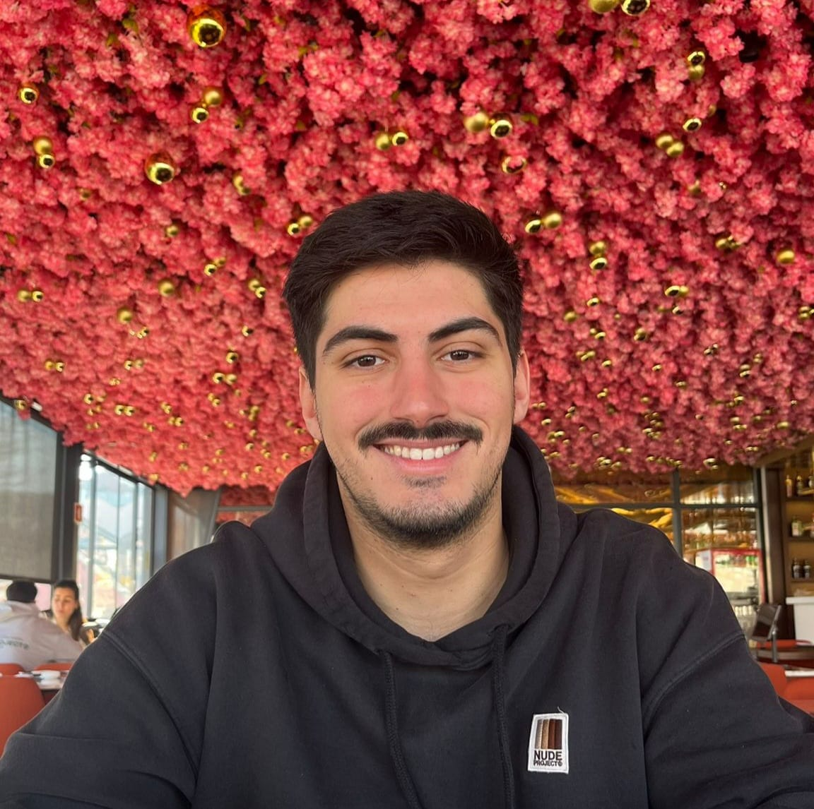

Estudante de Engenharia Informática Aplicada
Focado em criar soluções lógicas, código limpo e arquiteturas robustas.
Olá! O meu nome é Filipe Candeias.
Sou estudante da Licenciatura em Engenharia Informática Aplicada na Escola Superior de Tecnologia e Gestão de Águeda (ESTGA), da Universidade de Aveiro.
Sou natural e residente de Águeda. Desde cedo desenvolvi um grande interesse pela tecnologia e pela informática, procurando compreender o funcionamento das ferramentas digitais e explorar novas soluções para diferentes desafios.
Considero-me uma pessoa proativa, criativa e com uma forte capacidade de aprendizagem. Gosto de enfrentar novos desafios e de adquirir constantemente novos conhecimentos, tanto a nível académico como pessoal. Procuro sempre realizar o meu trabalho com dedicação e responsabilidade, mantendo uma atitude positiva e colaborativa em qualquer contexto.
Nos meus tempos livres, gosto de gaming, jogos de tabuleiro e construção com LEGO, atividades que estimulam o raciocínio lógico, a criatividade e a capacidade de resolução de problemas. Tenho também interesse pelo desporto, valorizando a prática de atividades físicas como forma de bem-estar e desenvolvimento pessoal.
Estou sempre disponível para aprender, crescer e abraçar novas experiências que contribuam para o meu desenvolvimento pessoal e profissional.
Escola Superior de Tecnologia e Gestão de Águeda
Atualmente frequento a Licenciatura em Engenharia Informática Aplicada, onde tenho vindo a construir uma base sólida em informática e desenvolvimento de software. Ao longo do curso, tenho desenvolvido competências em programação, bases de dados, sistemas operativos e redes de computadores através de trabalhos académicos e projetos práticos. Estas experiências têm fortalecido as minhas capacidades de resolução de problemas, trabalho em equipa e comunicação, ao mesmo tempo que aumentam o meu interesse pela tecnologia e pela aprendizagem contínua.
Escola Superior de Tecnologia e Gestão de Águeda
Frequentei uma formação na área de redes elétricas e automação industrial, onde desenvolvi conhecimentos em instalação, manutenção e análise de redes de energia, comunicação e sistemas de segurança. Ao longo da formação, tive também contacto com automação industrial, incluindo programação de autómatos e utilização de ferramentas de simulação e programação de robôs como o RoboDK. Estas experiências permitiram-me reforçar competências técnicas e desenvolver capacidades de resolução de problemas e adaptação a diferentes contextos técnicos.",
Escola Secundária Adolfo Portela
Frequentei o curso de Técnico de Gestão e Programação de Sistemas Informáticos, onde adquiri conhecimentos em programação, bases de dados e sistemas operativos. Desenvolvi competências em resolução de problemas e trabalho em equipa, além de uma sólida compreensão das metodologias de desenvolvimento de software.
Part-time
Desempenho funções de atendimento e aconselhamento ao cliente em loja, reposição e organização de stock, bem como gestão e etiquetagem de produtos, garantindo o bom funcionamento do espaço comercial.
Full-time
Fui responsável pela gestão de stock e controlo de inventário da loja, assegurando a comunicação com fornecedores e apoiando a supervisão e coordenação das operações diárias.
Full-time
Realizei atendimento e apoio ao cliente, reposição e organização de produtos em loja, bem como tarefas de gestão e etiquetagem de artigos.
Full-time
Prestei atendimento especializado ao cliente, realizando reparação e diagnóstico de avarias em telemóveis, bem como a gestão de garantias e processos de assistência técnica.
Aplicação desenvolvida em Java para apoiar a gestão de eventos de espaços culturais, utilizando estruturas de dados e persistência em ficheiros para organizar salas, eventos e recursos.
Ver CódigoAplicação web para gestão desportiva, permitindo a organização de equipas, atletas e atividades, de forma a garantir uma gestão mais eficiente e estruturada das rotinas associadas ao nível amador.
Ver CódigoAplicação web interativa que mapeia dados geográficos e meteorológicos por distritos e freguesias através de camadas de mapas dinâmicas.
Ver CódigoDigita comandos e fica a saber mais sobre mim.